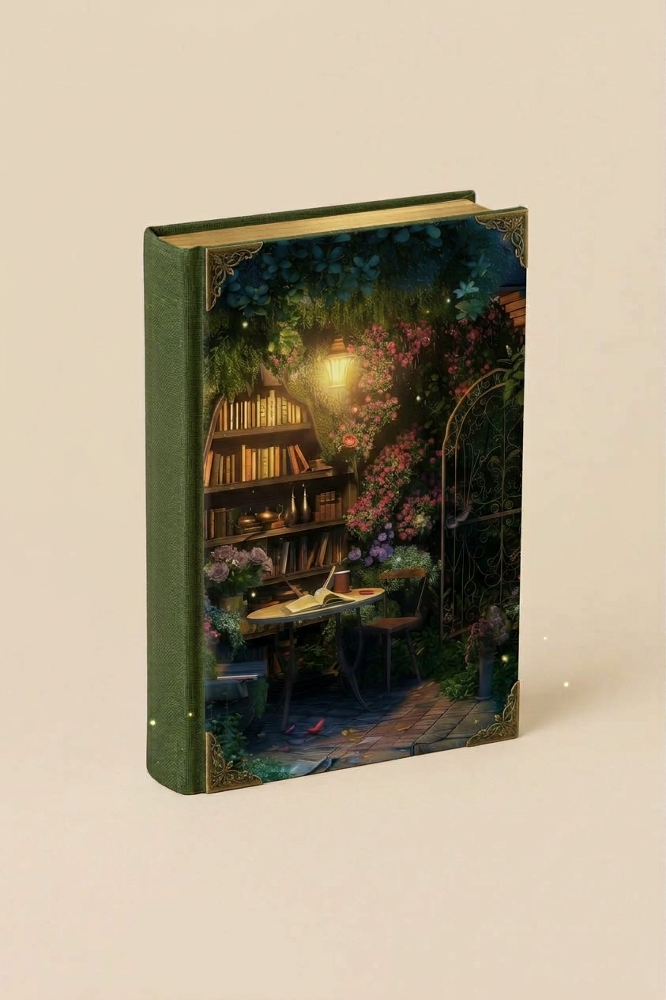

About the Book
Behind an old wooden door lies a mysterious garden filled with forgotten secrets, magical plants and stories waiting to be discovered.
When Alice finds the forgotten door hidden beneath the ivy-covered walls of an abandoned house, she steps into a world untouched by time. Strange flowers bloom beneath the moonlight, forgotten paths lead deeper into the garden, and every corner seems to hide a story of its own.
But the garden is not as peaceful as it first appears. The deeper Alice ventures, the more she begins to wonder why the door was forgotten — and who is waiting on the other side.

12€